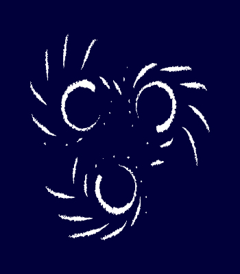
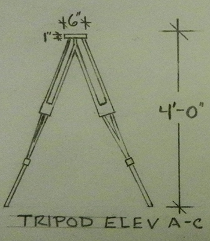
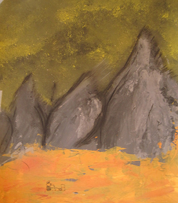
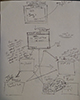
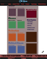

For me, design has never been about the media, it lies at the junction of people, stories, and passions.
My Resume
Portfolios
Graphic Design

Consulting for a technology start-up, producing cover art for a publishing company, creating a new inventory system and writing business analysis: the stories I have told will freelancing provided myriad challenges and rewards.
View »
Theatrical Design

Becoming an expert on everything and juggling a multitude of requirements, all while fighting against the hard deadline of opening night was an ever-exciting design challenge.
View »
Traditional Art

I was not a Renaissance Master when I started traditional art, but being able to share concepts pictorially through a solid understanding of design concepts is the most valuable skill I have ever learned.
View »
Process
Research
Surveys, personas, studying existing competition, and talking to clients, users, friends, and experts: every design starts with research because it leads to more compelling stories.
Mock-Ups

Mock-ups build on wireframes with color and detail. Digital and easily replicated, adjustment for feedback is easy as each round get more nuanced.
Finished Product
With a high-fidelity mock-up in hand, it's easy to start work in the final medium and follow the plan to completion.